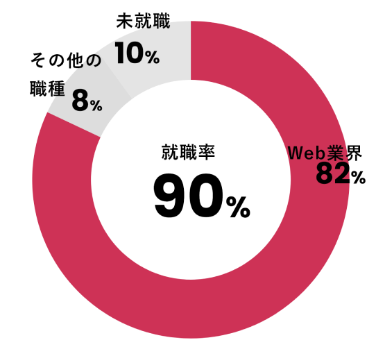
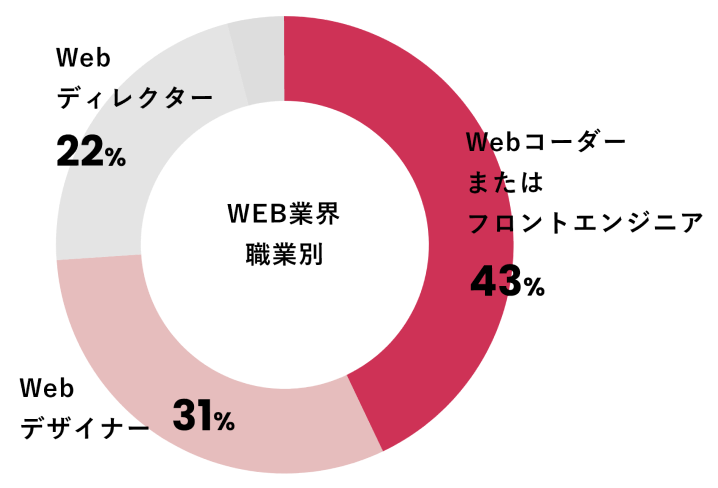

就職に関すること
Employment
未経験からでも就職・転職
今までパソコンを使用した職務の経験が無くてもWebに関連する
企業へ就職・転職した受講生が多数いらっしゃいます。
就職率とWeb業界のどのような職種に就職したのかグラフ化しております。
又、過去の受講生の方々が実際に就職している企業様をご紹介いたします。
Web業界への就職率

Web業界での主な職種

過去の就職実績
WSSを修了した受講生の方々が就職している企業様です。(五十音順)
一部ですがご紹介させて頂きますので、是非ご参考下さい。